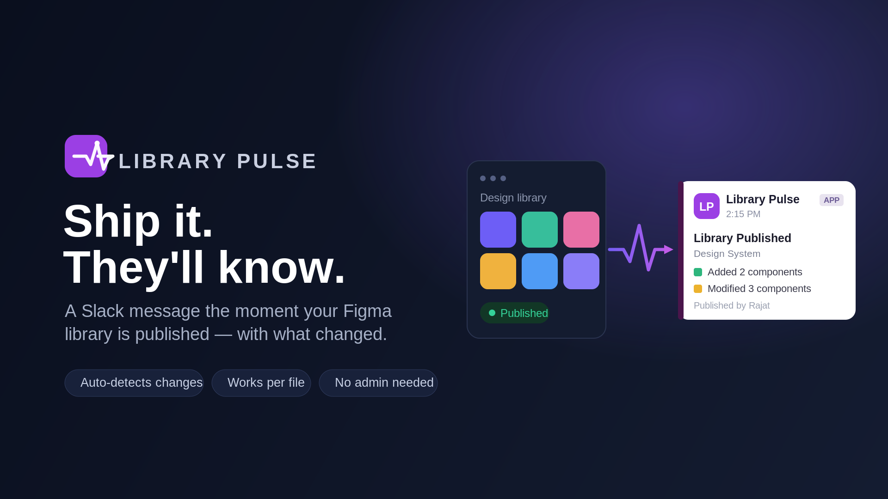

Library Pulse
Slack alerts the moment your Figma library is published: see exactly what changed.
A free Figma plugin by Rajat Garg · Version 6, 25 September 2026

About
When someone publishes changes to a Figma library, the people who use it usually find out by accident. Library Pulse closes that gap: the moment the library is published, it posts a Slack message that lists exactly what changed.
What the Slack message includes
- The library's name and who published it
- The publisher's description, the note they typed when publishing
- Components, styles and variables that were added, modified or removed
- Your team's own message, with real @mentions that ping people or user groups in Slack
- The publish time, shown in each reader's own time zone
- A link back to the file
It watches the one file you choose, using your own access to that file, so you don't need to be a Figma team or organisation admin. Everyone with edit access to the file shares one setup, and it posts to one to three Slack channels.
Download
Library Pulse is free on the Figma Community.
Get Library Pulse on Figma Community
You will need
- A Slack workspace where you can add an app
- Edit access to the Figma library file you want to watch
- The library published at least once: that is how the plugin identifies the file
Publishing libraries is a paid-plan Figma feature. Slack user groups need a paid Slack plan; mentioning people works on every plan.
How to use
- Open the plugin in your Figma library file. It connects your Figma account (one quick browser confirmation the first time) and identifies the file on its own.
- Connect your Slack workspace (Slack workspace admin approval required).
- Pick one to three Slack channels and, if you like, write a message to go with every update: type @ to mention people or user groups.
- Choose Save & Activate.
From then on, every publish of that file posts an update to your channels. To stop them, open the plugin in the file and choose Disable. If Slack or Figma access is ever revoked, the plugin says exactly what to reconnect.
Privacy policy
Last updated 29 September 2026
This policy covers Library Pulse: the Figma plugin and the service behind it, which connects to Figma and Slack for you. Library Pulse is made and maintained by Rajat Garg.
What it can access
- In Figma, it asks only for permission to manage webhooks on your file, to check that you can access the file, and to read published component and style metadata, which is how it identifies the file. It never reads your designs or file contents. Inside the plugin it also reads your Figma user ID, to connect your account, and your name, which it only shows back to you in the plugin.
- In Slack, it can post messages and list the names of channels, members and user groups for its pickers. It never reads your messages.
What it stores
- Your Figma user ID, and the access tokens Figma issues to Library Pulse
- For each connected Slack workspace: its ID and name, the Slack user ID of the person who connected it, and the token Slack issues to Library Pulse
- For each file that is set up: its key and name, the chosen channels, the optional team message and its mentions, the Figma user ID of the person who set it up, and whether its updates are on
- A record of each publish received and each update sent: the file, the channel, the time, and whether it was delivered
- For the pickers, a copy of your workspace's channel, member and user-group names, fetched from Slack again once it is more than ten minutes old
- While you connect Figma or Slack, a sign-in record that hands your session to the plugin, valid for ten minutes
- On your computer, in Figma's storage for the plugin: a session token and your connection details
The Figma and Slack tokens are encrypted at rest (AES-256-GCM). Your file contents are never stored, and the details of each publish are passed on to Slack, not kept.
How it is used
Only to deliver the updates you set up and to fill the plugin's pickers. It is never sold or shared.
Where it is kept
The service runs on Vercel and keeps its data in a Supabase (Postgres) database. Access is limited to the maintainer. Vercel's operational logs record events such as a saved setup or a failed delivery, with identifiers like your Figma user ID, and never your tokens.
Keeping and deleting it
- Library Pulse keeps this data until you ask for it to be deleted. Disable stops a file's updates and keeps its setup.
- The person who set up a file can also choose Remove Figma connection, which deletes the webhook Library Pulse registered on the file.
- You can revoke Library Pulse's access to your Figma account, and remove the app from your Slack workspace, at any time.
- To have your data deleted, email rajatgarg1809@gmail.com.
Changes and contact
Any change to this policy is posted on this page with a new date. Questions and data requests: rajatgarg1809@gmail.com.
Terms of use
Last updated 29 September 2026
By installing or using Library Pulse, you agree to these terms.
- Free. Library Pulse is free to use.
- Your use. Use it only with Figma files and Slack workspaces you are allowed to use, and follow Figma's and Slack's own terms. You are responsible for what your setup posts, including your team's message and its mentions.
- As is. Library Pulse is provided as is, without warranties of any kind. Updates can be delayed or missed, and the service can change, pause or end at any time.
- Liability. To the extent the law allows, Rajat Garg is not liable for any loss or damage arising from the use of Library Pulse.
- Stopping. You can stop at any time: disable it in the plugin, revoke its access to your Figma account and remove it from your Slack workspace.
- Changes. Any change to these terms is posted on this page with a new date. Using Library Pulse after a change means you accept it.
Questions: rajatgarg1809@gmail.com.